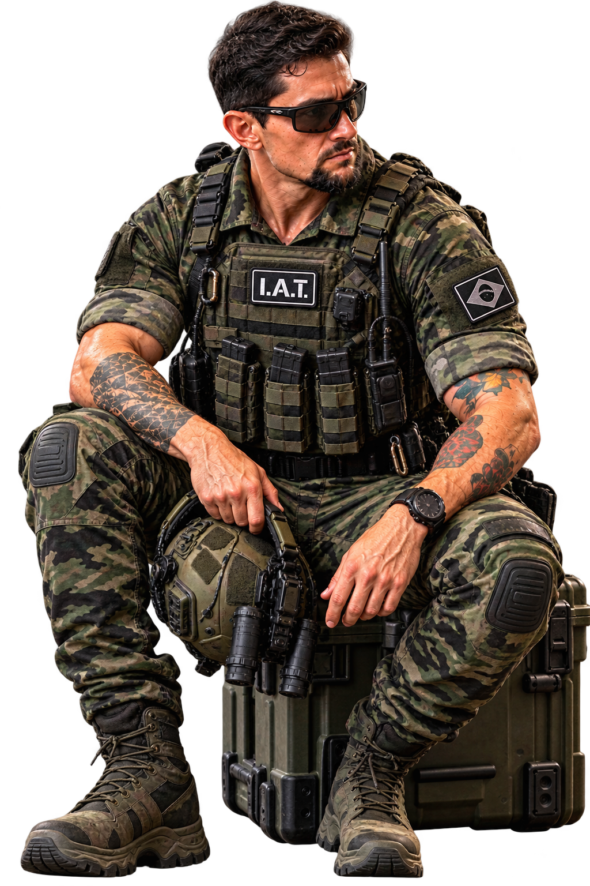

Portfólio profissional
Fernando Victor
Barbosa de Faria
Instrutor Qualificado
Armamento e Tiro • Formação • Segurança • Performance
Uma apresentação profissional construída sobre formação técnica, didática, segurança e experiência multidisciplinar.
80 h/aFormação IAT
87,50%Nota final
2026Atuação atual

Minas IAT Fight & Shot
Técnica, didática e segurança.
O site reúne a trajetória profissional, formação, atuação prática, participação esportiva, documentação e materiais de referência em uma estrutura mais fácil de navegar.
Ver apresentação completa →Instrutor QualificadoArmamento e TiroPrimeiros SocorrosBoxe e Artes MarciaisPreparação e Didática
Contato direto
Quer falar comigo?
Entre em contato pelo WhatsApp para informações, cursos, instrução, contratação ou parcerias.
🟢 Falar no WhatsApp